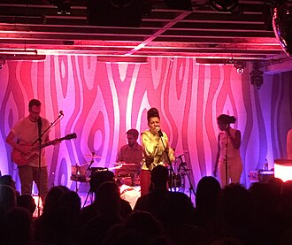

Emily King
Emily King is an American singer and songwriter. She started her career in 2004 and her first album East Side Story was released in August 2007. In December 2007, she was a Grammy Award nominee for Best Contemporary R&B Album. In 2019, she was nominated for Best R&B Song for "Look at Me Now" and her album Scenery was nominated for Best Engineered Album, Non-Classical. In 2020, King was nominated again, for Best R&B Performance with her song "See Me".
Complete Discography & Tracklists (24)
2007 East Side Story 🎵 14 Tracks
2011 The Seven EP 🎵 0 Tracks
No tracks registered.
2015 The Switch 🎵 11 Tracks
2016 The Switch (Deluxe Edition) 🎵 0 Tracks
No tracks registered.
2019 Scenery 🎵 0 Tracks
No tracks registered.
2019 Change Of Scenery: Remix EP 🎵 5 Tracks
2019 Look At Me Now (Acoustic) 🎵 0 Tracks
No tracks registered.
2019 Can't Hold Me (Machinedrum Remix) 🎵 0 Tracks
No tracks registered.
2020 Sides 🎵 0 Tracks
No tracks registered.
2020 See Me 🎵 0 Tracks
No tracks registered.
2020 Teach You (Acoustic) 🎵 0 Tracks
No tracks registered.
2020 Radio (Acoustic) 🎵 0 Tracks
No tracks registered.
2023 Special Occasion 🎵 0 Tracks
No tracks registered.
2023 Bad Memory (From "Norah Jones is Playing Along" Podcast) 🎵 1 Tracks
2023 False Start 🎵 3 Tracks
2024 Anyway I Love You (Live Acoustic) 🎵 0 Tracks
No tracks registered.
2025 Holidays on Your Pillow 🎵 0 Tracks
No tracks registered.
2025 to be loved by you 🎵 0 Tracks
No tracks registered.
2026 Distance (Demo) 🎵 0 Tracks
No tracks registered.